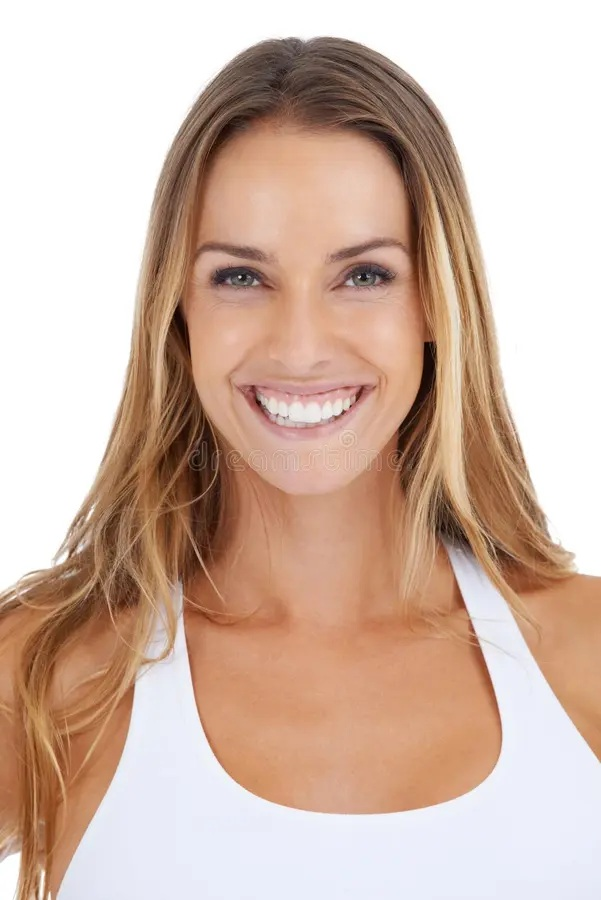

TIPOS DE CARGAS Y SISTEMAS DE ALMACENAMIENTO
Módulo: Operaciones de Almacenamiento
PREGUNTA
0 / 40
TIEMPO
150 s
CORRECTAS
0
ERRADAS
0
PRESIONA INICIAR PARA COMENZAR

Clasifica cargas y sistemas de almacenamiento antes que termine el tiempo
▶ INICIAR JUEGO
NOTA FINAL: 1,0
❌
✔️